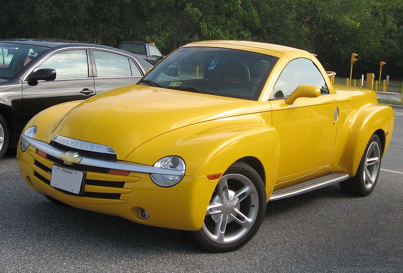

Modelos actuales
Chevrolet Camaro

El nuevo Chevrolet Camaro es un automóvil deportivo producido por el fabricante estadounidense Chevrolet. El Camaro surgió como respuesta de General Motors a su rival más digno durante esta época: el Ford Mustang. En plena era de los pony cars, Chevrolet presentó este modelo en dos versiones: el camaro Rally Sport y el camaro Super Sport (SS). Este último contaba con un V8 de 5.7 litros, y otro motor opcional de 396 plgs³ (6,5 litros), estaban hecho para la clase de cliente estadounidense apasionado por la velocidad, con la idea de correr en el verano y guardarlo en el invierno, ya que se fabricaba en versión descapotable como en coupé. Esta tradición nunca jamás continuó a pesar de la gran decadencia a mediados de los años 1970, con la subida del precio de los combustibles. Este modelo se hizo famoso en las carreras de Trans-Am y la National Hot Rod Association.
Chevrolet Corvette
El Chevrolet Corvette es un automóvil deportivo fabricado por la marca estadounidense Chevrolet desde el año 1953. Es fabricado en Bowling Green, Kentucky, donde también se encuentra el Museo Nacional de Corvette. Anteriormente era fabricado en Flint, Míchigan y San Luis, Misuri. Fue el primer deportivo construido por Chevrolet.
Existen siete generaciones de este deportivo estadounidense: C1 (1953-1962), C2 (1963-1967), C3 (1968-1982), C4 (1984-1996), C5 (1997-2004), C6 (2005-2013) y C7 (2013-presente). Se fabrican diversas versiones con diferentes funciones dentro de cada generación. A lo largo de los años, las versiones del coche han ganado premios de revistas como Motor Trend y Car and Driver, y de organizaciones como la Sociedad de Ingenieros Automotrices, y se ha utilizado a lo largo de los años como coche de seguridad en las 500 millas de Indianápolis desde 1978.
El Corvette de primera generación fue diseñado por Harley Earl y presentado sin mucha acogida el 17 de enero de 1953, motivo por el cual casi no salió a producción.
Si bien se vende bajo la marca Chevrolet en los Estados Unidos y otros lugares en el mundo, también se vende bajo su propia marca Corvette en Europa y Japón, donde es bastante raro este modelo. El automóvil se construye en versiones coupé y descapotable; la posibilidad de una versión sedán también ha sido considerada por los ejecutivos de GM.
| Caracteristica |
Corvette 1 |
Corvette 4 |
Corvette 5 |
| Motor |
5361 cc |
5733 cc |
5665 cc |
| Tipo de motor |
V8 |
V8 |
V8 |
| Válvulas por cilindro |
2 |
2 |
2 |
| Potencia máxima |
250.00 PS a 4400 Rev. Por min. |
245.00 PS a 4000 Rev. por min. |
344.7 PS a 5400 Rev. por min |
| Torque máximo |
475.00 Nm a 2800 Rev. Por min. |
454.00 Nm a 3200 Rev. por min. |
483.00 Nm a 4200 Rev. por min. |
| Tipo de frenos |
Discos |
Discos |
Discos |
| Máxima velocidad |
|
242.0 km/h |
|
| Transmisión |
|
6-velocidades manual |
6-velocidades manual |
Traccion |
|
Trasera |
Trasera |
| Capacidad máxima del tanque de combustible |
61.0 litros |
77.0 litros |
117.0 litros |
| Imagen |
|
|
|
Chevrolet SSR
El Chevrolet SSR (Super Sport Roadster), es una camioneta de techo rígido retráctil fabricada por Chevrolet entre 2003 y 2006.
El camión estaba basado en la plataforma de la larga distancia entre ejes Chevrolet TrailBlazer EXT, y ofreció el un estilo “retro” de techo duro retráctil de acero diseñada por ASC. El modelo de producción basado en el concept car Supersport Roadster se muestra en el Auto Show de Detroit 2000. Una producción temprana de SSR fue el ritmo de coches para la carrera de 500 millas de Indianápolis 2003.
Los modelos 2003 y 2004 utilizaron el motor General Motors Vortec de 5300 de 5,3 L V8 de 300 HP. Su rendimiento fue de 7,7 s de 0 a 60 MPH (97 km/h), 15,9 segundos a 86.4 MPH en una carrera de cuarto de milla. La SSR 2005 utilizó el motor General Motors LS2 V8 de 390 HP (291 kW), que también se encuentra en el Chevrolet Corvette C6 y Pontiac GTO, y también ofrece una transmisión manual (el Tremec de seis velocidades) por primera vez, como una opción. Para el año modelo 2006, el motor General Motors LS2 presentó pequeñas modificaciones que han impulsado su producción a 395 HP (transmisión automática) y 400 HP (transmisión manual), respectivamente. Además, se añadieron insignias de GM al vehículo.
Chevrolet Cobalt
El Chevrolet Cobalt es un automóvil de turismo del segmento C producido por el fabricante estadounidense Chevrolet desde el año 2005. El Cobalt remaplaza al Chevrolet Cavalier en el mercado de América del Norte. El Cobalt compite con rivales como el Honda Civic, el Toyota Corolla y el Mazda 3. El Pontiac G5 es esenciamente el mismo automóvil pero con diferencias estéticas y de equipamiento.
Se encuentra disponible con carrocerías cupé y como sedán. Si bien, su versión coupé es exclusiva, siendo imitado por el Pontiac G5, su versión sedán es prácticamente similar al Opel Astra. Está basado en la plataforma GM Delta, la misma de los Chevrolet HHR, Pontiac G5, Saturn ION, Opel Astra y Opel Zafira. Todos los Cobalt se ensamblan en Lordstown, Ohio.
En el 2009, el Cobalt y el G5 sufrirán modificaciones estéticas. Se comenzará a producir en México, mientras GM Lordstown comenzará con la siguiente generación. El Chevrolet Cobalt no se comercializo en México, ya que se comercializo el Chevrolet Optra Coreano y el Chevrolet Astra Brasilero.
Iniciado el 2009, Chevrolet lanzará al sucesor global del Cobalt: El Chevrolet Cruze (Basado en la nueva Plataforma Delta II) en Europa, con los lanzamientos en otros mercados (incluyendo los Estados Unidos) a proceder en 2010. El Cruze, será fabricado en múltiples lugares alrededor del mundo, incluyendo la fábrica de Lordstown, donde el Cruze será fabricado brevemente junto al Cobalt, hasta que la producción de este último sea totalmente cerrada"
"El Cruze, será puesto junto a los ya exitosos Chevrolet Cobalt, Cobalt XFE y Cobalt SS, los cuales casi todos son vendidos en concesionarios oficiales." Dijo el Vicepresidente de Chevrolet, Ed Peper. “Nuestros distribuidores autorizados están pidiendo muchos más Cobalts de lo que podemos construir.